Система нормативных документов в строительстве
СТРОИТЕЛЬНЫЕ НОРМЫ И ПРАВИЛА РОССИЙСКОЙ ФЕДЕРАЦИИ
ЗАЩИТА ОТ ШУМА
СНиП 23-03-2003
ГОСУДАРСТВЕННЫЙ КОМИТЕТ
РОССИЙСКОЙ ФЕДЕРАЦИИ
ПО СТРОИТЕЛЬСТВУ И ЖИЛИЩНО-КОММУНАЛЬНОМУ КОМПЛЕКСУ
(ГОССТРОЙ РОССИИ)
Москва
2004
ПРЕДИСЛОВИЕ
1 РАЗРАБОТАНЫ
Научно-исследовательским институтом строительной физики (НИИСФ) РААСН
2 ВНЕСЕНЫ
Управлением технического нормирования, стандартизации и сертификации в
строительстве и ЖКХ Госстроя России
3 ПРИНЯТЫ И ВВЕДЕНЫ В ДЕЙСТВИЕ постановлением Госстроя России от 30 июня 2003 г. №
136
4 ВЗАМЕН СНиП II-12-77
СОДЕРЖАНИЕ
СТРОИТЕЛЬНЫЕ НОРМЫ И ПРАВИЛА
РОССИЙСКОЙ ФЕДЕРАЦИИ
ЗАЩИТА ОТ ШУМА
SOUND PROTECTION
1 ОБЛАСТЬ ПРИМЕНЕНИЯ
Настоящие нормы и правила
устанавливают обязательные требования, которые должны выполняться при
проектировании, строительстве и эксплуатации зданий различного назначения,
планировке и застройке населенных мест с целью защиты от шума и обеспечения
нормативных параметров акустической среды в производственных, жилых,
общественных зданиях и на территории жилой застройки.
2 НОРМАТИВНЫЕ ССЫЛКИ
В настоящих нормах и правилах приведены ссылки на
следующие нормативные документы:
ГОСТ
12.1.023-80 ССБТ. Шум. Методы установления значений шумовых характеристик
стационарных машин
ГОСТ 17187-81
Шумомеры. Общие технические требования и методы испытаний
ГОСТ
27296-87 Защита от шума в строительстве. Звукоизоляция ограждающих
конструкций зданий. Методы измерения
СНиП
2.07.01-89* Градостроительство. Планировка и застройка городских и сельских
поселений
СП
23-103-2003 Проектирование звукоизоляции ограждающих конструкций жилых и
общественных зданий
3 ТЕРМИНЫ И ОПРЕДЕЛЕНИЯ
Термины с
соответствующими определениями, применяемые в настоящих нормах и правилах,
приведены в приложении А.
4 ОБЩИЕ ПОЛОЖЕНИЯ
4.1 Защита
от шума строительно-акустическими методами должна обеспечиваться:
а) на рабочих местах промышленных предприятий:
рациональным с акустической
точки зрения решением генерального плана объекта, рациональным
архитектурно-планировочным решением зданий;
применением ограждающих конструкций зданий с требуемой
звукоизоляцией;
применением звукопоглощающих конструкций (звукопоглощающих
облицовок, кулис, штучных поглотителей);
применением звукоизолирующих кабин наблюдения и
дистанционного управления;
применением звукоизолирующих кожухов на шумных
агрегатах;
применением акустических экранов;
применением глушителей шума в системах вентиляции,
кондиционирования воздуха и в аэрогазодинамических установках;
виброизоляцией технологического оборудования;
б) в
помещениях жилых и общественных зданий:
рациональным архитектурно-планировочным решением здания;
применением ограждающих конструкций, обеспечивающих
нормативную звукоизоляцию;
применением звукопоглощающих облицовок (в помещениях
общественных зданий);
применением глушителей шума в системах принудительной
вентиляции и кондиционирования воздуха;
виброизоляцией инженерного и санитарно-технического
оборудования зданий;
в) на
территории жилой застройки: соблюдением санитарно-защитных зон (по фактору
шума) промышленных и энергетических предприятий, автомобильных и железных
дорог, аэропортов, предприятий транспорта (сортировочных станций, трамвайных
депо, автобусных парков);
применением рациональных приемов планировки и
застройки жилых кварталов и районов;
применением шумозащитных зданий;
применением придорожных шумозащитных экранов;
применением шумозащитных полос зеленых насаждений.
4.2
Акустическое благоустройство, создание оптимальных акустических условий в
аудиториях, зрительных залах театров, кинотеатров, дворцов культуры, спортивных
залах, залах ожидания и операционных залах железнодорожных, аэро- и автовокзалов
должно обеспечиваться:
рациональным объемно-планировочным решением зала
(объем, соотношение линейных размеров);
применением звукопоглощающих материалов и конструкций;
применением звукоотражающих и звукорассеивающих
конструкций;
применением ограждающих конструкций, обеспечивающих
требуемую звукоизоляцию от внутренних и внешних источников шума;
применением глушителей шума в системах принудительной
вентиляции и кондиционирования воздуха;
применением систем звукоусиления, оповещения и
передачи информации.
4.3 В
проектах должны быть предусмотрены мероприятия по защите от шума:
в разделе
«Технологические решения» (для производственных предприятий) при выборе
технологического оборудования следует отдавать предпочтение малошумному
оборудованию, шумовые характеристики которого установлены в соответствии с ГОСТ
12.1.023. Размещение технологического оборудования должно осуществляться с
учетом снижения шума на рабочих местах в помещениях и на территориях путем
применения рациональных архитектурно-планировочных решений;
в разделе «Строительные решения» (для производственных
предприятий) на основе акустического расчета ожидаемого шума на рабочих местах
должны быть, в случае необходимости, рассчитаны и запроектированы
строительно-акустические мероприятия по защите от шума;
в разделе «Архитектурно-строительные решения» объектов
жилищно-гражданского строительства на основе расчета звукоизоляции ограждающих
конструкций зданий должны быть обоснованы их проектные решения;
в разделе «Инженерное оборудование» на основе расчета
по вибро- и звукоизоляции инженерного оборудования должны быть обоснованы
соответствующие проектные решения.
4.4 Раздел
«Защита от шума» должен включаться в состав проектной градостроительной
документации по планировке и застройке городов, поселков, сельских населенных
пунктов, а также отдельных микрорайонов городов в соответствии со СНиП
2.07.01.
Данный раздел должен включать в себя:
на стадии технико-экономических основ развития города
(ТЭО), генерального плана города, населенного пункта - карты шума улично-дорожной
сети, железных дорог, водного и воздушного транспорта, промышленных зон и
отдельных промышленных и энергетических объектов;
на стадии проекта планировки промышленной зоны города
и генерального плана группы предприятий - карты шума промышленных предприятий,
архитектурно-планировочные и строительно-акустические мероприятия по снижению
воздействия шума на селитебную территорию;
на стадии проекта детальной планировки района города -
карты шума на территории, расчеты ожидаемого шума у фасадов зданий (жилых,
административных, детских дошкольных учреждений, школ, больниц), на площадках
отдыха; типы и расположение шумозащитных зданий на магистральных улицах;
устройство шумозащитных экранов на участках скоростных дорог; устройство
шумозащитных полос зеленых насаждений; применение шумозащитных окон на фасадах
зданий, обращенных в сторону магистральных улиц.
4.5
Акустический расчет должен производиться в следующей последовательности:
выявление источников шума и определение их шумовых
характеристик;
выбор точек в помещениях и на территориях, для которых
необходимо провести расчет (расчетных точек);
определение путей распространения шума от источника
(источников) до расчетных точек и потерь звуковой энергии по каждому из путей
(снижение за счет расстояния, экранирования, звукоизоляции ограждающих
конструкций, звукопоглощения и др.);
определение ожидаемых уровней шума в расчетных точках;
определение требуемого снижения уровней шума на основе
сопоставления ожидаемых уровней шума с допустимыми значениями;
разработка мероприятий по обеспечению требуемого
снижения шума;
поверочный расчет
ожидаемых уровней шума в расчетных точках с учетом выполнения
строительно-акустических мероприятий.
4.6
Акустический расчет следует проводить по уровням звукового давления L,
дБ, в восьми октавных полосах частот со среднегеометрическими частотами 63,
125, 250, 500, 1000, 2000, 4000 и 8000 Гц или по уровням звука по частотной
коррекции «А» LА,
дБА. Расчет проводят с точностью до 0,1 децибела, окончательный результат
округляют до целых значений.
4.7 В
проектах защиты от шума должны быть определены технико-экономические показатели
принятых решений.
4.8
Используемые в проектах звукоизоляционные, звукопоглощающие, вибродемпфирующие
материалы должны иметь соответствующие пожарные и гигиенические сертификаты.
5 ИСТОЧНИКИ ШУМА И ИХ ШУМОВЫЕ
ХАРАКТЕРИСТИКИ
5.1 Основным
источником шума в зданиях различного назначения является технологическое и
инженерное оборудование.
Шумовыми характеристиками технологического и
инженерного оборудования, создающего постоянный шум, являются уровни звуковой
мощности Lw, дБ, в восьми октавных полосах частот со
среднегеометрическими частотами 63 - 8000 Гц (октавные уровни звуковой
мощности), а оборудования, создающего непостоянный шум, - эквивалентные уровни
звуковой мощности Lwэкв и
максимальные уровни звуковой мощности Lwмакс.
в восьми октавных полосах частот.
5.2 Шумовые
характеристики технологического и инженерного оборудования должны содержаться в
его технической документации и прилагаться к разделу проекта «Защита от шума».
Следует учитывать зависимость шумовых характеристик от режима работы,
выполняемой операции, обрабатываемого материала и т.п. Возможные варианты
шумовых характеристик должны быть отражены в технической документации
оборудования.
5.3
Основными источниками внешнего шума являются транспортные потоки на улицах и
дорогах, железнодорожный, водный и воздушный транспорт, промышленные и
энергетические предприятия и их отдельные установки, внутриквартальные
источники шума (трансформаторные подстанции, центральные тепловые пункты,
хозяйственные дворы магазинов, спортивные и игровые площадки и др.).
5.4 Шумовыми
характеристиками источников внешнего шума являются:
для транспортных потоков на улицах и дорогах -
эквивалентный уровень звука LАэкв,
дБА, на расстоянии 7,5 м от оси первой полосы движения (для трамваев - на
расстоянии 7,5 м от оси ближнего пути);
для потоков железнодорожных поездов - эквивалентный
уровень звука LАэкв,
дБА, и максимальный уровень звука LАмакс, дБА, на расстоянии 25 м от оси ближнего к
расчетной точке пути;
для водного транспорта - эквивалентный уровень звука LАэкв, дБА, и
максимальный уровень звука LАмакс,
дБА, на расстоянии 25 м от борта судна;
для воздушного транспорта - эквивалентный уровень
звука LАэкв,
дБА, и максимальный уровень звука LАмакс, дБА, в расчетной точке;
для промышленных и энергетических предприятий с
максимальным линейным размером в плане до 300 м включительно - эквивалентные
уровни звуковой мощности Lwэкв и
максимальные уровни звуковой мощности Lwмакс в
восьмиоктавных полосах частот со среднегеометрическими частотами 63 - 8000 Гц и
фактор направленности излучения в направлении расчетной точки Ф (Ф = 1, если
фактор направленности не известен). Допускается представлять шумовые
характеристики в виде эквивалентных корректированных уровней звуковой мощности LwАэкв,
дБА, и максимальных корректированных уровней звуковой мощности LwАмакс,
дБА;
для промышленных зон, промышленных и энергетических предприятий
с максимальным линейным размером в плане более 300 м - эквивалентный уровень
звука LАэкв.гр,
дБА, и максимальный уровень звука LАмакс.гр, дБА, на границе территории предприятия и селитебной
территории в направлении расчетной точки;
для внутриквартальных источников шума - эквивалентный
уровень звука LАэкв и
максимальный уровень звука LАмакс
на фиксированном расстоянии от источника.
6 НОРМЫ ДОПУСТИМОГО ШУМА
6.1 Нормируемыми параметрами постоянного шума в расчетных
точках являются уровни звукового давления L, дБ, в
октавных полосах частот со среднегеометрическими частотами 31,5; 63; 125; 250;
500; 1000; 2000; 4000 и 8000 Гц. Для ориентировочных расчетов допускается
использование уровней звука LA, дБА.
6.2 Нормируемыми параметрами непостоянного (прерывистого,
колеблющегося во времени) шума являются эквивалентные уровни звукового давления
Lэкв,
дБ, и максимальные уровни звукового давления Lмакс, дБ, в октавных полосах частот со
среднегеометрическими частотами 31,5; 63; 125; 250; 500; 1000; 2000; 4000 и
8000 Гц.
Допускается использовать эквивалентные уровни звука LАэкв, дБА, и
максимальные уровни звука LАмакс,
дБА. Шум считают в пределах нормы, когда он как по эквивалентному, так и по
максимальному уровню не превышает установленные нормативные значения.
6.3
Допустимые уровни звукового давления L, дБ
(эквивалентные уровни звукового давления, дБ), допустимые эквивалентные и
максимальные уровни звука на рабочих местах в производственных и
вспомогательных зданиях, на площадках промышленных предприятий, в помещениях
жилых и общественных зданий и на территориях жилой застройки следует принимать
по таблице 1.
6.4 Нормативные требования по уровням шума в жилых и
общественных зданиях установлены для различных категорий:
категория А - обеспечение высококомфортных условий;
категория Б - обеспечение комфортных условий;
категория В - обеспечение предельно допустимых
условий.
Категорию здания устанавливают техническим заданием на
проектирование.
К гостиницам категории А относятся гостиницы, имеющие
по международной классификации четыре и пять звезд, к категории Б - три звезды,
к категории В - менее трех звезд.
7 ОПРЕДЕЛЕНИЕ УРОВНЕЙ ЗВУКОВОГО
ДАВЛЕНИЯ В РАСЧЕТНЫХ ТОЧКАХ
7.1 Расчетные точки в производственных и вспомогательных
помещениях промышленных предприятий выбирают на рабочих местах и (или) в зонах
постоянного пребывания людей на высоте 1,5 м от пола. В помещении с одним источником
шума или с несколькими однотипными источниками одна расчетная точка берется на
рабочем месте в зоне прямого звука источника, другая - в зоне отраженного звука
на месте постоянного пребывания людей, не связанных непосредственно с работой
данного источника.
В помещении с несколькими источниками шума, уровни
звуковой мощности которых различаются на 10 дБ и более, расчетные точки
выбирают на рабочих местах у источников с максимальными и минимальными
уровнями. В помещении с групповым размещением однотипного оборудования
расчетные точки выбирают на рабочем месте в центре групп с максимальными и
минимальными уровнями.
7.2
Исходными данными для акустического расчета являются:
- план и разрез помещения с расположением
технологического и инженерного оборудования и расчетных точек;
- сведения о характеристиках ограждающих конструкций
помещения (материал, толщина, плотность и др.);
- шумовые характеристики и геометрические размеры
источников шума.
7.3 Шумовые
характеристики технологического и инженерного оборудования в виде октавных
уровней звуковой мощности Lw, корректированных уровней звуковой мощности LwA, а также эквивалентных LwAэкв, и
максимальных LwAмакс,
корректированных уровней звуковой мощности для источников непостоянного шума
должны указываться заводом-изготовителем в технической документации.
Допускается представлять шумовые характеристики в виде
октавных уровней звукового давления L или
уровней звука на рабочем месте LA (на
фиксированном расстоянии) при одиночно работающем оборудовании.
7.4 Октавные уровни звукового давления L,
дБ, в расчетных точках соразмерных помещений (с отношением наибольшего
геометрического размера к наименьшему не более 5) при работе одного источника
шума следует определять по формуле
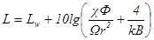
, (1)
|
где 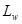
|
-
октавный уровень звуковой мощности, дБ;
|
|
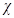
|
-
коэффициент, учитывающий влияние ближнего поля в тех случаях, когда
расстояние г меньше удвоенного максимального габарита источника (r <
2lмакс)
(принимают по таблице 2);
|
|
Ф
|
-
фактор направленности источника шума (для источников с равномерным излучением
Ф = 1);
|
|
|
-
пространственный угол излучения источника, рад. (принимают по таблице 3);
|
|
r
|
-
расстояние от акустического центра источника шума до расчетной точки, м (если
точное положение акустического центра неизвестно, он принимается совпадающим
с геометрическим центром);
|
|
k
|
-
коэффициент, учитывающий нарушение диффузности звукового поля в помещении
(принимают по таблице 4 в зависимости от
среднего коэффициента звукопоглощения aср);
|
|
В
|
-
акустическая постоянная помещения, м2, определяемая по формуле
|
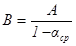
(2)
|
А
|
-
эквивалентная площадь звукопоглощения, м2, определяемая по формуле
|
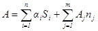
, (3)
|
|
-
коэффициент звукопоглощения i-й поверхности;
|
|
|
-
площадь i-й поверхности, м2;
|
|
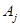
|
-
эквивалентная площадь звукопоглощения j-го штучного
поглотителя, м2;
|
|
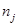
|
-
количество j-ых штучных поглотителей, шт.;
|
|
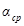
|
-
средний коэффициент звукопоглощения, определяемый по формуле
|
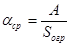
, (4)
|
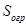
|
-
суммарная площадь ограждающих поверхностей помещения, м2.
|
Таблица 2
|
r/lмакс
|
|
10lgx, дБ
|
|
0,6
|
3
|
5
|
|
0,8
|
2,5
|
4
|
|
1,0
|
2
|
3
|
|
1,2
|
1,6
|
2
|
|
1,5
|
1,25
|
1
|
|
2
|
1
|
0
|
Таблица 3
|
Условия излучения
|
W, рад.
|
10lgW,
дБ
|
|
В пространство - источник на
колонне в помещении, на мачте, трубе
|
4p
|
11
|
|
В полупространство - источник
на полу, на земле, на стене
|
2p
|
8
|
|
В 1/4 пространства - источник в
двухгранном углу (на полу близко от одной стены)
|
p
|
5
|
|
В 1/8 пространства - источник в
трехгранном углу (на полу близко от двух стен)
|
p/2
|
2
|
Таблица 4
|
aср
|
k
|
10lgk, дБ
|
|
0,2
|
1,25
|
1
|
|
0,4
|
1,6
|
2
|
|
0,5
|
2,0
|
3
|
|
0,6
|
2,5
|
4
|
7.5 Граничный
радиус rгр,
м, в помещении с одним источником шума - расстояние от акустического центра
источника, на котором плотность энергии прямого звука равна плотности энергии
отраженного звука, определяют по формуле
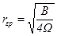
. (5)
Если источник расположен на полу помещения, граничный
радиус определяют по формуле
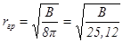
. (6)
Расчетные точки на расстоянии до 0,5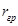
-можно считать находящимися в зоне действия прямого
звука. В этом случае октавные уровни звукового давления следует определять по
формуле
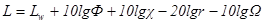
. (7)
Расчетные точки на расстоянии более 2 можно
считать находящимися в зоне действия отраженного звука. В этом случае октавные
уровни звукового давления следует определять по формуле
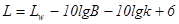
. (8)
7.6 Октавные уровни звукового давления L,
дБ, в расчетных точках соразмерного
помещения с несколькими источниками шума следует определять по формуле
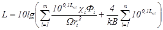
, (9)
|
где 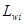
|
-
октавный уровень звуковой мощности i-го
источника, дБ;
|
|
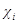 , 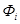 ,
|
-
то же, что и в формулах (1) и (6), но для i-го
источника;
|
|
т
|
-
число источников шума, ближайших к расчетной точке (находящихся на расстоянии
ri £ 5rмин, где rмин - расстояние от расчетной точки до акустического
центра ближайшего источника шума);
|
|
n
|
-
общее число источников шума в помещении;
|
|
k и B
|
-
то же, что и в формулах (1) и (8).
|
Если все n источников имеют одинаковую
звуковую мощность Lwi, то
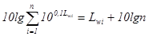
(10)
7.7 Если
источник шума и расчетная точка расположены на территории, расстояние между
ними больше удвоенного максимального размера источника шума и между ними нет
препятствий, экранирующих шум или отражающих шум в направлении расчетной точки,
то октавные уровни звукового давления L, дБ, в расчетных
точках следует определять:
при точечном источнике шума (отдельная установка на
территории, трансформатор и т.п.) - по формуле
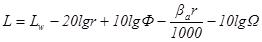
; (11)
при протяженном источнике ограниченного размера (стена
производственного здания, цепочка шахт вентиляционных систем на крыше
производственного здания, трансформаторная подстанция с большим количеством
открыто расположенных трансформаторов) - по формуле
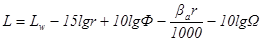
; (12)
|
где , r,
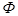 ,
|
-
то же, что и в формулах (1) и (7);
|
|
bа
|
-
затухание звука в атмосфере, дБ/км, принимаемое по таблице 5.
|
При расстоянии r
£ 50 м затухание звука в атмосфере не учитывают.
7.8 Октавные уровни звукового давления L,
дБ, в расчетных точках в изолируемом
помещении, проникающие через ограждающую конструкцию из соседнего помещения с
источником (источниками) шума или с территории, следует определять по формуле
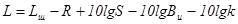
, (13)
|
где 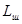
|
-
октавный уровень звукового давления в помещении с источником шума на
расстоянии 2 м от разделяющего помещения ограждения, дБ, определяют по
формулам (1), (8) или (9); при
шуме, проникающем в изолируемое помещение с территории, октавный уровень
звукового давления Lш
снаружи на расстоянии 2 м от ограждающей конструкции определяют по формулам (11) или (12);
|
|
R
|
-
изоляция воздушного шума ограждающей конструкцией, через которую проникает
шум, дБ;
|
|
S
|
-
площадь ограждающей конструкции, м2;
|
|
Ви
|
-
акустическая постоянная изолируемого помещения, м2;
|
|
k
|
-
то же, что и в формуле (1).
|
Если ограждающая конструкция состоит из нескольких
частей с различной звукоизоляцией (например, стена с окном и дверью), R определяют по
формуле
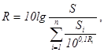
(14)
|
где
|
-
площадь i-й части, м2;
|
|
Ri
|
-
изоляция воздушного шума i-й частью, дБ.
|
Если ограждающая конструкция состоит из двух частей с
различной звукоизоляцией (R1 > R2), R определяют
по формуле
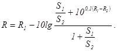
(15)
При R1 >> R2 при
определенном соотношении площадей 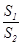
допускается вместо звукоизоляции
ограждающей конструкции R при расчетах по формуле (13) вводить звукоизоляцию слабой части составного
ограждения R2 и ее площадь S2.
Эквивалентный и максимальный уровни звука LA, дБА, создаваемого внешним транспортом и проникающего
в помещения через наружную стену с окном (окнами), следует определять по
формуле
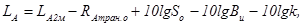
(16)
|
где 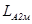
|
-
эквивалентный (максимальный) уровень звука снаружи на расстоянии 2 м от
ограждения, дБА;
|
|
|
-
изоляция внешнего транспортного шума окном, дБА;
|
|
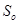
|
-
площадь окна (окон), м2;
|
|
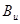
|
-
акустическая постоянная помещения, м2 (в октавной полосе 500 Гц);
|
|
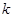
|
-
то же, что и в формуле (1).
|
Таблица 5
|
Среднегеометрические частоты
октавных полос, Гц
|
63
|
125
|
250
|
500
|
1000
|
2000
|
4000
|
8000
|
|
bа,
дБ/км
|
0
|
0,7
|
1,5
|
3
|
6
|
12
|
24
|
48
|
Для помещений жилых и административных зданий,
гостиниц, общежитий и др. площадью до 25 м2, LА, дБА, определяют по
формуле
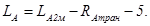
(17)
7.9 Октавные
уровни звукового давления в защищаемом от шума помещении в тех случаях, когда
источники шума находятся в другом здании, следует определять в несколько
этапов:
1) определяют октавные уровни звуковой мощности шума 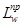
, дБ,
прошедшего через наружное ограждение (или несколько ограждений) на территорию,
по формуле
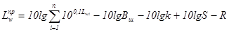
, (18)
|
где
|
-
октавный уровень звуковой мощности i-го
источника, дБ;
|
|
Вш
|
-
акустическая постоянная помещения с источником (источниками) шума, м2;
|
|
|
-
площадь ограждения, м2;
|
|
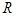
|
-
изоляция воздушного шума ограждением, дБ;
|
2)
определяют октавные уровни звукового давления для вспомогательной расчетной
точки на расстоянии 2 м от наружного ограждения защищаемого от шума помещения
по формулам (10) или (11) от каждого из источников шума (ИШ 1 и ИШ 2, рисунок 1). При расчете следует учитывать,
что для расчетных точек в пределах 10° от плоскости стены здания (на рисунке 1 - комплексный источник шума ИШ 1)
вводится поправка на направленность излучения 10lgФ = -5 дБ;
3) определяют суммарные октавные уровни звукового
давления Lсум,
дБ, во вспомогательной расчетной точке (на расстоянии 2 м от наружного
ограждения защищаемого от шума помещения) от всех источников шума по формуле
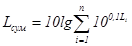
, (19)
|
где 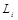
|
-
октавный уровень звукового давления от i-го
источника, дБ;
|
4) определяют октавные уровни звукового давления L,
дБ, в защищаемом от шума помещении по формуле (13),
заменив в ней Lш на Lcyм.
7.10 При
непостоянном шуме октавные уровни звукового давления Lj, дБ, в расчетной точке следует определять по
формулам (1), (7), (8), (9), (11),
(12) или (13) для каждого отрезка времени 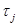
, мин, в течение
которого уровень остается постоянным, заменяя в указанных формулах L на
Lj.
|
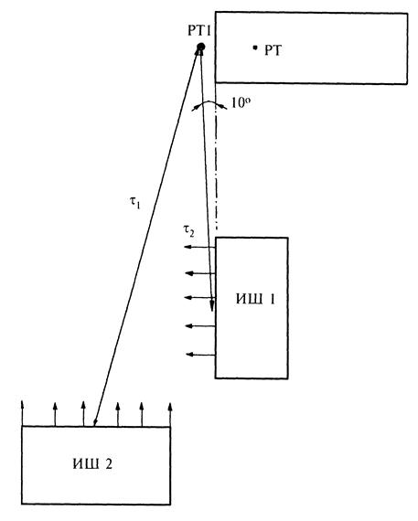
|
|
РТ - расчетная точка;
РТ1 - вспомогательная расчетная точка;
ИШ 1 и ИШ 2 - здания - источники шума
|
Рисунок 1 -
Схема расчета
Эквивалентные октавные уровни звукового давления Lэкв, дБ, за общее время
воздействия Т, мин, следует определять по формуле
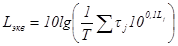
, (20)
|
где 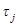
|
-
время воздействия уровня Lj, мин;
|
|
Lj
|
-
октавный уровень за время , дБ.
|
За общее время воздействия шума Т принимают: в
производственных и служебных помещениях - продолжительность рабочей смены; в
жилых и других помещениях, а также на территориях, где нормы установлены
отдельно для дня и ночи, - продолжительность дня 7.00 - 23.00 и ночи 23.00 -
7.00 ч.
Допускается в последнем случае принимать за время
воздействия Т днем - четырехчасовой период с наибольшими уровнями, ночью
- одночасовой период с наибольшими уровнями.
7.11
Эквивалентные уровни звука непостоянного шума LАэкв, дБА, следует определять по формуле (20), заменяя Lэкв на LАэкв и
Lj LАj.
8 ОПРЕДЕЛЕНИЕ ТРЕБУЕМОГО СНИЖЕНИЯ
УРОВНЕЙ ШУМА
8.1
Требуемое снижение уровней шума 
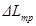
, дБ, в октавных полосах частот или в
уровнях звука, дБА, следует определять для каждой расчетной точки, выбранной в
соответствии с 7.1. При расчетах шума от
транспортного потока улиц и дорог, железнодорожных и трамвайных линий, водного
и воздушного транспорта, а также от промышленных зон и отдельных предприятий
требуемое снижение уровней шума определяют в уровнях звука на всех стадиях
проектирования.
8.2 При
расчетах шума на стадии ТЭО на рабочих местах в производственных и
вспомогательных зданиях и на площадках промышленных предприятий, в расчетных
точках помещений жилых и общественных зданий требуемое снижение уровней шума
допускается определять в уровнях звука.
8.3
Требуемое снижение уровней шума в расчетных точках на стадии рабочего проекта
или проекта предприятия, объектов жилищного и гражданского строительства
определяют в октавных полосах нормируемого диапазона частот.
8.4
Требуемое снижение октавных уровней звукового давления 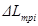
, дБ (или уровней звука
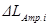
,
дБА) в расчетной точке на территории от каждого источника шума (транспортный
поток улиц и дорог, железнодорожный транспорт, внутриквартальный источник шума,
промышленное предприятие и т.п.) определяют по формуле
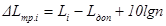
, (21)
|
где Li
|
-
октавный уровень звукового давления или уровень звука от i-го
источника, рассчитанный в расчетной точке, дБ (дБА);
|
|
Lдоп
|
-
допустимый октавный уровень звукового давления, дБ, или уровень звука, дБА
(определяют по таблице 1);
|
|
n
|
-
общее число источников шума, учитываемых при расчете суммарного уровня в
расчетной точке.
|
8.5
Требуемое снижение октавных уровней звукового давления , дБ, или уровня звука 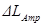
, дБА, в
расчетной точке в помещении следует определять:
а) при одном источнике шума - по формуле
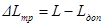
, (22)
|
где L
|
-
октавный уровень звукового давления, дБ, или уровень звука от этого источника
шума, дБА, рассчитанный в расчетной точке;
|
|
Lдоп
|
-
то же, что и в формуле (21);
|
б) при
нескольких однотипных одновременно работающих источниках шума (например,
ткацкий цех) - по формуле
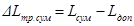
, (23)
|
где Lсум
|
-
октавный уровень звукового давления, дБ, или уровень звука в расчетной точке,
дБА, рассчитанные по формулам (9) и (10);
|
|
Lдоп
|
-
то же, что и в формуле (21);
|
в) при
нескольких одновременно работающих и расположенных группами источниках шума, сильно
различающихся по уровням звуковой мощности (более 10 дБ):
- в расчетной точке в центре наиболее шумной группы -
по формуле (23), где Lсум - октавные уровни звукового давления или уровни звука,
рассчитанные по формуле (9); Lдоп - то же, что и в
формуле (21);
- в расчетной точке в центре групп более тихих
источников шума - по формуле (23);
г) в помещениях без источников шума по формуле
, (24)
|
где Li
|
-
октавный уровень звукового давления, дБ, или уровень звука, дБА, рассчитанные
отдельно от каждого внешнего источника шума по 7.8;
|
|
n
|
-
общее число внешних источников шума;
|
|
Lдоп
|
-
то же, что и в формуле (21).
|
8.6 На территориях,
а также в помещениях, где установлены источники с сильно различающимися
уровнями звуковой мощности, заглушение шума следует начинать с наиболее шумных
источников.
9 ЗВУКОИЗОЛЯЦИЯ ОГРАЖДАЮЩИХ
КОНСТРУКЦИЙ ЗДАНИЙ
9.1 Нормируемыми
параметрами звукоизоляции внутренних ограждающих конструкций жилых и
общественных зданий, а также вспомогательных зданий производственных
предприятий являются индексы изоляции воздушного шума ограждающими
конструкциями Rw, дБ, и индексы приведенного уровня ударного шума, Lnw, дБ, (для перекрытий).
Нормируемым параметром звукоизоляции наружных
ограждающих конструкций (в том числе окон, витрин и других видов остекления)
является звукоизоляция RАтран,
дБА, представляющая собой изоляцию внешнего шума, производимого потоком
городского транспорта.
9.2
Нормативные значения индексов изоляции воздушного шума внутренними ограждающими
конструкциями Rw
и индексов приведенного уровня
ударного шума Lnw, для жилых и общественных зданий, а также для
вспомогательных зданий производственных предприятий приведены в таблице 6 для категорий зданий А, Б и В (см. 6.4).
Таблица 6
|
Наименование и
расположение ограждающей конструкции
|
Rw, дБ
|
Lnw, дБ
|
|
Жилые здания
|
|
1 Перекрытия между помещениями
квартир и отделяющие помещения квартир от холлов лестничных клеток и
используемых чердачных помещений:
|
|
|
|
в домах
категории А
|
54
|
551
|
|
»
» » Б
|
52
|
581
|
|
»
» » В
|
50
|
601
|
|
2 Перекрытия между помещениями
квартир и расположенными под ними магазинами: в домах категории А
|
|
|
|
в домах
категории А
|
59
|
55
|
|
|
452
|
|
»
» » Б и В
|
57
|
58
|
|
|
482
|
|
3 Перекрытия между комнатами в
квартире в двух уровнях:
|
|
|
|
в домах
категории А
|
47
|
60
|
|
»
» » Б
|
45
|
63
|
|
»
» » В
|
43
|
66
|
|
4 Перекрытия между жилыми
помещениями общежитий
|
50
|
60
|
|
5 Перекрытия, отделяющие
помещения культурно-бытового обслуживания общежитий друг от друга и от
помещений общего пользования (холлы, вестибюли и пр.)
|
47
|
651
|
|
6 Перекрытия между помещениями
квартиры и расположенными под ними ресторанами, кафе, спортивными залами
|
|
|
|
в домах
категории А
|
62
|
55
|
|
|
452
|
|
» »
категорий Б и В
|
60
|
58
|
|
|
482
|
|
7 Перекрытия между помещениями
квартиры и расположенными под ними административными помещениями, офисами:
|
|
|
|
в домах категории
А
|
52
|
582
|
|
» »
категорий Б и В
|
50
|
602
|
|
8 Стены и перегородки между
квартирами, между помещениями квартир и лестничными клетками, холлами,
коридорами, вестибюлями:
|
|
|
|
в домах
категории А
|
54
|
-
|
|
»
» » Б
|
52
|
-
|
|
»
» » В
|
50
|
-
|
|
9 Стены между помещениями
квартир и магазинами:
|
|
|
|
в домах
категории А
|
59
|
-
|
|
» »
категорий Б и В
|
57
|
-
|
|
10 Стены и перегородки, отделяющие
помещения квартир от ресторанов, кафе, спортивных залов:
|
|
|
|
в домах
категории А
|
62
|
-
|
|
» »
категорий Б и В
|
60
|
-
|
|
11 Перегородки между комнатами,
между кухней и комнатой в квартире
|
|
|
|
в домах
категории А
|
43
|
|
|
» »
категорий Б и В
|
41
|
|
|
12 Перегородки между санузлом и
комнатой одной квартиры
|
47
|
|
|
13 Стены и перегородки между
комнатами общежитий
|
50
|
-
|
|
14 Стены и перегородки, отделяющие
помещения культурно-бытового обслуживания общежитий друг от друга и от
помещений общего пользования (холлы, вестибюли, лестничные клетки)
|
47
|
-
|
|
15 Входные двери квартир,
выходящие на лестничные клетки, в вестибюли и коридоры:
|
|
|
|
в домах
категории А
|
34
|
-
|
|
»
» » Б
|
32
|
-
|
|
»
» » В
|
30
|
-
|
|
Гостиницы
|
|
16 Перекрытия между номерами:
|
|
|
|
категории А
|
52
|
57
|
|
» Б
|
50
|
60
|
|
» В
|
48
|
62
|
|
17 Перекрытия, отделяющие
номера от помещений общего пользования (вестибюли, холлы, буфеты):
|
|
|
|
категории А
|
54
|
55
|
|
|
502
|
|
категорий Б
и В
|
52
|
58
|
|
|
532
|
|
18 Перекрытия, отделяющие
номера от помещений ресторанов, кафе:
|
|
|
|
категории А
|
62
|
57
|
|
|
452
|
|
категорий Б
и В
|
59
|
60
|
|
|
482
|
|
19 Стены и перегородки между
номерами:
|
|
|
|
категории А
|
52
|
-
|
|
» Б
|
50
|
-
|
|
» В
|
48
|
-
|
|
20 Стены и перегородки, отделяющие
номера от помещений общего пользования (лестничные клетки, вестибюли, холлы,
буфеты):
|
|
|
|
категории А
|
54
|
-
|
|
категорий Б
и В
|
52
|
-
|
|
21 Стены и перегородки,
отделяющие номера от ресторанов, кафе:
|
|
|
|
категории А
|
62
|
-
|
|
категорий Б
и В
|
59
|
-
|
|
Административные
здания, офисы
|
|
22 Перекрытия между рабочими
комнатами, кабинетами, секретариатами и отделяющие эти помещения от помещений
общего пользования (вестибюли, холлы):
|
|
|
|
категории А
|
52
|
632
|
|
категорий Б
и В
|
50
|
662
|
|
23 Перекрытия, отделяющие
рабочие комнаты, кабинеты от помещений с источниками шума (машбюро,
телетайпные и т.п.):
|
|
|
|
категории А
|
54
|
602
|
|
категорий Б
и В
|
52
|
632
|
|
24 Стены и перегородки между кабинетами
и отделяющие кабинеты от рабочих комнат:
|
|
|
|
категории А
|
51
|
-
|
|
категорий Б
и В
|
49
|
-
|
|
25 Стены и перегородки,
отделяющие рабочие комнаты от помещений общего пользования (вестибюли, холлы,
буфеты) и от помещений с источниками шума (машбюро, телетайпные и т.п.):
|
|
|
|
категории А
|
50
|
-
|
|
категорий Б
и В
|
48
|
-
|
|
26 Стены и перегородки,
отделяющие кабинеты от помещений общего пользования и шумных помещений:
|
|
|
|
категории А
|
54
|
-
|
|
категорий Б
и В
|
52
|
-
|
|
Больницы и
санатории
|
|
27 Перекрытия между палатами, кабинетами врачей
|
47
|
60
|
|
28 Перекрытия между
операционными и отделяющие операционные от палат и кабинетов
|
57
|
60
|
|
29 Перекрытия, отделяющие палаты,
кабинеты врачей от помещений общего пользования (вестибюли, холлы)
|
52
|
63
|
|
30 Перекрытия, отделяющие
палаты, кабинеты врачей от столовых, кухонь
|
57
|
502
|
|
31 Стены и перегородки между
палатами, кабинетами врачей
|
47
|
-
|
|
32 Стены и перегородки между
операционными и отделяющие операционные от других помещений. Стены и
перегородки, отделяющие палаты и кабинеты врачей от столовых и кухонь
|
57
|
-
|
|
33 Стены и перегородки, отделяющие
палаты и кабинеты врачей от помещений общего пользования
|
52
|
-
|
|
Учебные заведения
|
|
34 Перекрытия между классами,
кабинетами, аудиториями и отделяющие эти помещения от помещений общего
пользования (коридоры, вестибюли, холлы)
|
47
|
63
|
|
35 Перекрытия между
музыкальными классами средних учебных заведений
|
57
|
58
|
|
36 Перекрытия между
музыкальными классами высших учебных заведений
|
60
|
53
|
|
37 Стены и перегородки между классами,
кабинетами и аудиториями и отделяющие эти помещения от помещений общего
пользования
|
47
|
-
|
|
38 Стены и перегородки между
музыкальными классами средних учебных заведений и отделяющие эти помещения от
помещений общего пользования
|
57
|
-
|
|
39 Стены и перегородки между
музыкальными классами высших учебных заведений
|
60
|
|
|
Детские дошкольные
учреждения
|
|
40 Перекрытия между групповыми
комнатами, спальнями
|
47
|
63
|
|
41 Перекрытия, отделяющие
групповые комнаты, спальни от кухонь
|
51
|
632
|
|
42 Стены и перегородки между
групповыми комнатами, спальнями и между другими детскими комнатами
|
47
|
-
|
|
43 Стены и перегородки,
отделяющие групповые комнаты, спальни от кухонь
|
51
|
-
|
|
1 Требование предъявляют также к передаче ударного шума в
жилые помещения квартир при ударном воздействии на пол помещения смежной
квартиры (в том числе и находящейся на том же этаже).
2 Требование предъявляют к передаче ударного шума в
защищаемое от шума помещение при ударном воздействии на пол помещения,
являющегося источником шума.
|
Нормативные значения RАтран для жилых комнат, номеров гостиниц, общежитий,
кабинетов и рабочих комнат административных зданий, палат больниц, кабинетов
врачей площадью до 25 м2 приведены в таблице
7 в зависимости от расчетного уровня транспортного шума у фасада здания.
Для промежуточных значений расчетных уровней требуемую величину RАтран следует
определять интерполяцией.
9.3 Индекс
изоляции воздушного шума Rw, дБ, ограждающей конструкцией с известной
(рассчитанной или измеренной) частотной характеристикой изоляции воздушного
шума определяют путем сопоставления этой частотной характеристики с оценочной
кривой, приведенной в таблице 8, поз. 1.
Для определения индекса изоляции воздушного шума Rw необходимо определить сумму неблагоприятных
отклонений данной частотной характеристики от оценочной кривой.
Неблагоприятными считают отклонения вниз от оценочной кривой.
Если сумма неблагоприятных отклонений максимально
приближается к 32 дБ, но не превышает эту величину, величина индекса Rw составляет 52 дБ.
Таблица 7 - Нормативные требования к звукоизоляции окон
|
Назначение
помещений
|
Требуемые
значения RАтран, дБА, при
эквивалентных уровнях звука у фасада здания при наиболее интенсивном движении
транспорта (в дневное время, час «пик»), дБА
|
|
60
|
65
|
70
|
75
|
80
|
|
1 Палаты больниц, санаториев,
кабинеты медицинских учреждений
|
15
|
20
|
25
|
30
|
35
|
|
2 Жилые комнаты квартир в
домах:
|
|
|
|
|
|
|
категории А
|
15
|
20
|
25
|
30
|
35
|
|
категорий Б
и В
|
-
|
15
|
20
|
25
|
30
|
|
3 Жилые комнаты общежитий
|
-
|
-
|
15
|
20
|
25
|
|
4 Номера гостиниц:
|
|
|
|
|
|
|
категории А
|
15
|
20
|
25
|
30
|
35
|
|
» Б
|
-
|
15
|
20
|
25
|
30
|
|
» В
|
-
|
-
|
15
|
20
|
25
|
|
5 Жилые помещения домов отдыха,
домов-интернатов для инвалидов
|
15
|
20
|
25
|
30
|
35
|
|
6 Рабочие комнаты, кабинеты в
административных зданиях и офисах:
|
|
|
|
|
|
|
категории А
|
-
|
-
|
15
|
20
|
25
|
|
категорий Б
и В
|
-
|
-
|
-
|
15
|
20
|
Таблица 8
Если
сумма неблагоприятных отклонений превышает 32 дБ, оценочная кривая смещается
вниз на целое число децибел так, чтобы сумма неблагоприятных отклонений не
превышала указанную величину.
Если сумма неблагоприятных отклонений значительно
меньше 32 дБ или неблагоприятные отклонения отсутствуют, оценочная кривая
смещается вверх на целое число децибел так, чтобы сумма неблагоприятных
отклонений от смещенной оценочной кривой максимально приближалась к 32 дБ, но
не превышала эту величину.
За величину индекса Rw
принимают ординату смещенной вверх или вниз оценочной кривой в третьоктавной
полосе со среднегеометрической частотой 500 Гц.
9.4 Индекс
приведенного уровня ударного шума Lnw для перекрытия с известной частотной характеристикой
приведенного уровня ударного шума определяют путем сопоставления этой частотной
характеристики с оценочной кривой, приведенной в таблице
8, поз. 2.
Для вычисления индекса Lnw
необходимо определить сумму неблагоприятных отклонений данной частотной
характеристики от оценочной кривой. Неблагоприятными считают отклонения вверх
от оценочной кривой.
Если сумма неблагоприятных отклонений максимально
приближается к 32 дБ, но не превышает эту величину, то величина индекса Lnw составляет 60 дБ.
Если сумма неблагоприятных отклонений превышает 32 дБ,
оценочная кривая смещается вверх (на целое число децибел) так, чтобы сумма
неблагоприятных отклонений от смещенной кривой не превышала указанную величину.
Если сумма неблагоприятных отклонений значительно
меньше 32 дБ или неблагоприятные отклонения отсутствуют, оценочная кривая
смещается вниз (на целое число децибел) так, чтобы сумма неблагоприятных
отклонений от смещенной кривой максимально приближалась к 32 дБ, но не
превышала эту величину.
За величину индекса Lnw
принимают ординату смещенной вверх или вниз оценочной кривой в третьоктавной
полосе со среднегеометрической частотой 500 Гц.
9.5 Величину
звукоизоляции окна RАтран,
дБА, определяют на основании частотной характеристики изоляции воздушного шума
окном с помощью эталонного спектра шума потока городского транспорта. Уровни
эталонного спектра, скорректированные по кривой частотной коррекции «А» для
шума с уровнем 75 дБА, приведены в таблице 8,
поз. 3.
Для определения величины звукоизоляции окна RАтран по известной
частотной характеристике изоляции воздушного шума необходимо в каждой
третьоктавной полосе частот из уровня эталонного спектра Li вычесть величину изоляции воздушного шума Ri данной конструкцией окна. Полученные величины уровней
следует сложить энергетически и результат сложения вычесть из уровня эталонного
шума, равного 75 дБА.
Величину звукоизоляции окна RАтран, дБА, определяют
по формуле
(25)
|
где Li
|
-
скорректированные по кривой частотной коррекции «А» уровни звукового давления
эталонного спектра в i-й третьоктавной полосе частот, дБ (принимают по таблице 8, поз. 3);
|
|
Ri
|
-
изоляция воздушного шума данной конструкцией окна в i-й
третьоктавной полосе частот, дБ.
|
9.6 Требуемую
звукоизоляцию внутренних ограждающих конструкций в производственных зданиях, а
также ограждающих конструкций,
отделяющих защищаемые от шума помещения от помещений с
источниками шума, нехарактерными для помещений, перечисленных в таблице 6, следует определять в виде изоляции воздушного
шума Rтр,
дБ, в октавных полосах частот нормируемого диапазона (6.1 и 6.2).
9.7
Требуемую звукоизоляцию воздушного шума Rтр, дБ, в октавных полосах частот ограждающей
конструкции, через которую проникает шум, следует определять при
распространении шума в помещение, защищаемое от шума, из смежного помещения с
источниками шума, а также с прилегающей территории по формуле
(26)
где Lш, S,
Ви, k - то же, что и в формуле (13).
В случаях когда ограждающая конструкция состоит из
нескольких частей с различной звукоизоляцией (стена с окном и дверью),
определенные по формуле (26) величины
относятся к общей величине звукоизоляции Rобщ.тр данной составной ограждающей конструкции. Требуемую
звукоизоляцию отдельных составляющих частей данного ограждения Riтр
следует определять по формуле
(27)
|
где
|
-
то же, что и Rтр в
формуле (26).
|
|
п
|
-
общее число элементов ограждающей конструкции с различной звукоизоляцией.
|
Если ограждающая конструкция состоит из двух частей с
сильно различающейся звукоизоляцией (R1>>R2), то требуемую
звукоизоляцию допускается определять только для слабой части ограждающей
конструкции по формуле (26), подставляя Rтр2 вместо Rтр и S2 вместо S.
9.8
Требуемую звукоизоляцию наружных ограждающих конструкций (в том числе окон,
витрин и других видов остекления) помещений площадью более 25 м2,
а также помещений, не указанных в таблице 8,
в зданиях, расположенных вблизи транспортных магистралей, следует определять по
формуле
, (28)
|
где , , , k
|
-
то же, что и в формуле (16);
|
|
|
-
допустимый эквивалентный (максимальный) уровень звука в помещении, дБА.
|
Требуемую
звукоизоляцию следует определять из расчета обеспечения
допустимых значений проникающего шума как по эквивалентному, так и по
максимальному уровню, т.е. из двух величин принимают большую.
9.9 Расчет
звукоизоляции ограждающих конструкций должен проводиться при разработке новых
конструктивных решений ограждений, применении новых строительных материалов и изделий.
Окончательная оценка звукоизоляции таких конструкций должна проводиться на
основании натурных испытаний по ГОСТ
27296.
9.10 Расчет
звукоизоляции ограждающих конструкций должен проводиться на основании СП
23-103.
РЕКОМЕНДАЦИИ ПО ПРОЕКТИРОВАНИЮ ОГРАЖДАЮЩИХ
КОНСТРУКЦИЙ, ОБЕСПЕЧИВАЮЩИХ НОРМАТИВНУЮ ЗВУКОИЗОЛЯЦИЮ
9.11
Элементы ограждений рекомендуется проектировать из материалов с плотной
структурой, не имеющей сквозных пор. Ограждения, выполненные из материалов со
сквозной пористостью, должны иметь наружные слои из плотного материала, бетона
или раствора.
Внутренние стены и перегородки из кирпича,
керамических и шлакобетонных блоков рекомендуется проектировать с заполнением
швов на всю толщину (без пустошовки) и оштукатуренными с двух сторон
безусадочным раствором.
9.12
Ограждающие конструкции необходимо проектировать так, чтобы в процессе
строительства и эксплуатации в их стыках не было и не возникло даже минимальных
сквозных щелей и трещин. Возникающие в процессе строительства щели и трещины
после их расчистки должны устраняться конструктивными мерами и заделкой
невысыхающими герметиками и другими материалами на всю глубину.
МЕЖДУЭТАЖНЫЕ ПЕРЕКРЫТИЯ
9.13 Пол на
звукоизоляционном слое (прокладках) не должен иметь жестких связей (звуковых
мостиков) с несущей частью перекрытия, стенами и другими конструкциями здания,
т.е. должен быть «плавающим». Деревянный пол или плавающее бетонное основание
пола (стяжка) должны быть отделены по контуру от стен и других конструкций
здания зазорами шириной 1 - 2 см, заполняемыми звукоизоляционным материалом или
изделием, например, мягкой древесно-волокнистой плитой, погонажными изделиями
из пористого полиэтилена и т.п. Плинтусы или галтели следует крепить только к
полу или только к стене. Примыкание конструкции пола на звукоизоляционном слое
к стене или перегородке показано на рисунке 2.
1 - несущая
часть междуэтажного перекрытия; 2 - бетонное основание пола; 3 -
покрытие пола; 4 - прокладка (слой) из звукоизоляционного материала; 5
- гибкий пластмассовый плинтус; 6 - стена; 7 - деревянная
галтель; 8 - дощатый пол на лагах
Рисунок 2
- Схема конструктивного решения узла примыкания пола на звукоизоляционном слое
к стене (перегородке)
При проектировании пола с
основанием в виде монолитной плавающей стяжки следует располагать по
звукоизоляционному слою сплошной гидроизоляционный слой (например, пергамин,
гидроизол, рубероид и. т.п.) с перехлестыванием в стыках не менее 20 см. В
стыках звукоизоляционных плит (матов) не должно быть щелей и зазоров.
9.14 В
конструкциях перекрытий, не имеющих запаса звукоизоляции, не рекомендуется
применение покрытий полов из линолеума на волокнистой подоснове, снижающих
изоляцию воздушного шума на 1 дБ по индексу Rw. Допускается применение
линолеума со вспененными слоями, которые не влияют на изоляцию воздушного шума
и могут обеспечивать необходимую изоляцию ударного шума при соответствующих
параметрах вспененных слоев.
9.15
Междуэтажные перекрытия с повышенными требованиями к изоляции воздушного шума (Rw = 57 - 62 дБ), разделяющие жилые и встроенные шумные
помещения, следует проектировать, как правило, с использованием плит из
монолитного железобетона достаточной толщины (например, каркасно-монолитная или
монолитная конструкция первого этажа). Достаточность звукоизоляции такой
конструкции определяют расчетом.
Другим возможным конструктивным вариантом при
размещении шумных помещений в первых нежилых этажах является устройство
промежуточного (технического) 2-го этажа. При этом также необходимо выполнить
расчеты, подтверждающие достаточную звукоизоляцию жилых помещений. Во всех
случаях размещения в первых нежилых этажах помещений с источниками шума
рекомендуется устройство в них подвесных потолков, значительно увеличивающих
звукоизоляцию перекрытий.
ВНУТРЕННИЕ СТЕНЫ И ПЕРЕГОРОДКИ
9.16 Двойные
стены или перегородки обычно проектируются с жесткой связью между элементами по
контуру или в отдельных точках. Величина промежутка между элементами
конструкций должна быть не менее 4 см.
В конструкциях
каркасно-обшивных перегородок следует предусматривать точечное крепление листов
к каркасу с шагом не менее 300 мм. Если применяют два слоя листов обшивки с
одной стороны каркаса, то они не должны склеиваться между собой. Шаг стоек
каркаса и расстояние между его горизонтальными элементами рекомендуется
принимать не менее 600 мм. Рекомендованное выше заполнение промежутка мягкими
звукопоглощающими материалами особенно эффективно для улучшения звукоизоляции
каркасно-обшивных перегородок. Кроме того, для повышения их звукоизоляции
рекомендуются самостоятельные каркасы для каждой из обшивок, а в необходимых
случаях возможно применение двух- или трехслойной обшивки с каждой стороны
перегородки.
9.17 Для
увеличения изоляции воздушного шума стеной или перегородкой, выполненной из
железобетона, бетона, кирпича и т.п., в ряде случаев, целесообразно
использовать дополнительную обшивку на относе.
В качестве материала обшивки могут использоваться:
гипсокартонные листы, твердые древесно-волокнистые плиты и подобные листовые
материалы, прикрепленные к стене по деревянным рейкам, по линейным или точечным
маякам из гипсового раствора. Воздушный промежуток между стеной и обшивкой
целесообразно выполнять толщиной 40 - 50 мм и заполнять мягким звукопоглощающим
материалом (минераловатными или стекловолокнистыми плитами, матами и т.п.).
9.18 Входные
двери квартир следует проектировать с порогом и уплотнительными прокладками в
притворах.
СТЫКИ И УЗЛЫ
9.19 Стыки
между внутренними ограждающими конструкциями, а также между ними и другими
примыкающими конструкциями должны быть запроектированы таким образом, чтобы в
них при строительстве отсутствовали и в процессе эксплуатации здания не
возникали сквозные трещины, щели и неплотности, которые резко снижают звукоизоляцию
ограждений. Стыки, в которых в процессе эксплуатации, несмотря на принятые
конструктивные меры, возможны взаимное перемещение стыкуемых элементов под
воздействием нагрузки, температурные и усадочные деформации, следует
конструировать с применением долговечных герметизирующих упругих материалов и
изделий, приклеиваемых к стыкуемым поверхностям.
9.20 Стыки
между несущими элементами стен и опирающимися на них перекрытиями следует проектировать
с заполнением раствором или бетоном. Если в результате нагрузок или других
воздействий возможно раскрытие швов, при проектировании должны быть
предусмотрены меры, не допускающие образования в стыках сквозных трещин.
Стыки между
несущими элементами внутренних стен проектируют, как правило, с заполнением
раствором или бетоном. Сопрягаемые поверхности стыкуемых элементов должны
образовывать полость (колодец), поперечные размеры которой обеспечивают
возможность плотного заполнения ее монтажным бетоном или раствором на всю
высоту элемента. Необходимо предусмотреть меры, ограничивающие взаимное
перемещение стыкуемых элементов (устройство шпонок, сварка закладных деталей и
т.д.). Соединительные детали, выпуски арматуры и т.п. не должны препятствовать
заполнению полости стыка бетоном или раствором. Заполнение стыков рекомендуется
производить безусадочным (расширяющимся) бетоном или раствором.
При проектировании
сборных элементов конструкций необходимо принимать такую конфигурацию и размеры
стыкуемых участков, которые обеспечивают размещение, наклейку, фиксацию и
требуемое обжатие герметизирующих материалов и изделий, когда их применение
предусмотрено.
ЭЛЕМЕНТЫ ОГРАЖДАЮЩИХ КОНСТРУКЦИЙ, СВЯЗАННЫЕ С
ИНЖЕНЕРНЫМ ОБОРУДОВАНИЕМ
9.21 Пропуск
труб водяного отопления, водоснабжения и т.п. через межквартирные стены не
допускается.
Трубы водяного отопления, водоснабжения и т.п. должны
пропускаться через междуэтажные перекрытия и межкомнатные стены (перегородки) в
эластичных гильзах (из пористого полиэтилена и других упругих материалов),
допускающих температурные перемещения и деформации труб без образования
сквозных щелей (рисунок 3).
1 - стена; 2 -
безусадочный бетон или раствор; 3 - прокладка (слой) из
звукоизоляционного материала; 4 - бетонное основание пола; 5 -
несущая часть перекрытия; 6 - эластичная гильза; 7 - труба стояка
отопления
Рисунок 3 - Схема конструктивного
решения узла пропуска стояка отопления через междуэтажное перекрытие
Полости в панелях внутренних стен, предназначенные для
соединения труб замоноличенных стояков отопления, должны быть заделаны
безусадочным бетоном или раствором.
9.22 Скрытая
электропроводка в межквартирных стенах и перегородках должна располагаться в
отдельных для каждой квартиры каналах или штрабах. Полости для установки
распаячных коробок и штепсельных розеток должны быть несквозными. Если
образование сквозных отверстий обусловлено технологией производства элементов
стены, указанные приборы должны устанавливаться в них только с одной стороны.
Свободную часть полости заделывают гипсовым или другим безусадочным раствором
слоем толщиной не менее 40 мм.
Не рекомендуется
устанавливать распаянные коробки и штепсельные розетки в междуквартирных
каркасно-обшивных перегородках. В случае необходимости следует использовать
штепсельные розетки и выключатели, при установке которых не вырезаются
отверстия в листах обшивок.
Вывод провода из перекрытия к потолочному светильнику
следует предусматривать в несквозной полости. Если образование сквозного
отверстия обусловлено технологией изготовления плиты перекрытия, то отверстие
должно состоять из двух частей. Верхняя часть большего диаметра должна быть
заделана безусадочным раствором, нижняя - заполнена звукопоглощающим материалом
(например, супертонким стекловолокном) и прикрыта со стороны потолка слоем
раствора или плотной декоративной крышкой (рисунок
4).
1 - панель
перекрытия; 2 - электроканал; 3 - крюк (приварен к круглой
стальной пластине); 4 - раствор (заделка нижней части отверстия условно
не показана)
Рисунок 4 -
Схема конструктивного решения выпуска провода из перекрытия к потолочному
светильнику (перекрытие со сквозным отверстием)
9.23
Конструкция вентиляционных блоков должна обеспечивать целостность стенок
(отсутствие в них сквозных каверн, трещин), разделяющих каналы. Горизонтальный
стык вентиляционных блоков должен исключать возможность проникновения шума по
неплотностям из одного канала в другой.
Вентиляционные
отверстия смежных по вертикали квартир должны сообщаться между собой через
сборный и попутный каналы не ближе, чем через этаж.
ЗВУКОИЗОЛЯЦИЯ ОГРАЖДАЮЩИХ КОНСТРУКЦИЙ КАБИН
НАБЛЮДЕНИЯ, ДИСТАНЦИОННОГО УПРАВЛЕНИЯ, УКРЫТИЙ, КОЖУХОВ
9.24
Звукоизолирующие кабины следует применять в промышленных цехах и на
территориях, где допустимые уровни превышены, для защиты от шума рабочих и
обслуживающего персонала. В звукоизолирующих кабинах следует располагать пульты
контроля и управления технологическими процессами и оборудованием, рабочие
места мастеров и начальников цехов.
Звукоизолирующие кабины подразделяют по их
звукоизоляции на четыре класса.
Значения изоляции воздушного шума в октавных полосах
частот R в зависимости от класса кабины должны быть не ниже
приведенных в таблице 9.
Требуемую звукоизоляцию отдельных элементов ограждений
кабин следует определять по формулам (26)
и (27), принимая за Lш - расчетный октавный
уровень звукового давления L в месте установки кабины, определенный в соответствии
с 7.4, 7.5
или 7.6, Lдоп - допустимый октавный уровень на рабочем месте в
кабине; Ви - акустическую постоянную кабины.
9.25 В
зависимости от требуемой звукоизоляции кабины могут быть запроектированы из
обычных строительных материалов (кирпича, железобетона и т.п.) или иметь
сборную конструкцию, собираемую из заранее изготовленных конструкций из стали,
алюминия, пластика, фанеры и других листовых материалов на сборном или сварном
каркасе.
Звукоизолирующие кабины следует устанавливать на
резиновых виброизоляторах для предотвращения передачи вибраций на ограждающие
конструкции и каркас кабины.
Таблица 9
|
Класс кабин
|
Изоляция
воздушного шума R, дБ, в октавных
полосах со среднегеометрическими частотами, Гц
|
|
63
|
125
|
250
|
500
|
1000
|
2000
|
4000
|
8000
|
|
1
|
25
|
30
|
35
|
40
|
45
|
50
|
50
|
45
|
|
2
|
15
|
20
|
25
|
30
|
35
|
40
|
40
|
35
|
|
3
|
5
|
10
|
15
|
20
|
25
|
30
|
30
|
25
|
|
4
|
-
|
-
|
5
|
10
|
15
|
20
|
20
|
15
|
9.26
Внутренний объем кабины должен составлять не менее 15 м3 на одного
человека. Высота кабины (внутри) - не менее 2,5 м. Кабина должна быть оборудована
системой вентиляции или кондиционирования воздуха с необходимыми глушителями
шума. Внутренние поверхности кабины должны быть на 50 - 70 % облицованы
звукопоглощающими материалами.
Двери кабины должны иметь уплотняющие прокладки в
притворе и запорные устройства, обеспечивающие обжатие прокладок. В кабинах
1-го и 2-го классов должны быть двойные двери с тамбуром.
9.27
Звукоизолирующие ограждения машин и технологического оборудования,
звукоизолирующие кожухи, выполненные из тонколистовых материалов (металлов,
пластиков, стекла и т.п.), следует применять для снижения уровней шума на
рабочих местах, расположенных непосредственно у источника шума, где применение
других строительно-акустических мероприятий нецелесообразно. Акустическую
эффективность конструкции кожуха оценивают его звукоизоляцией Rк, дБ.
9.28
Звукоизолирующий кожух целесообразно применять в тех случаях, когда создаваемый
агрегатом (машиной) шум в расчетной точке
превышает
допустимое значение на 5 дБ и более хотя бы в одной октавной полосе, а шум
всего остального технологического оборудования в той же октавной полосе (в той
же расчетной точке) на 2 дБ и более ниже допустимого. Требуемую звукоизоляцию
кожуха следует определять в октавных полосах частот по формуле
, (29)
|
где
|
-
расчетный октавный уровень звукового давления, создаваемый данным агрегатом в
расчетной точке, дБ;
|
|
|
-
допустимый октавный уровень звукового давления, дБ;
|
|
|
-
коэффициент звукопоглощения внутренней облицовки кожуха;
|
|
|
-
поправка, определяемая по таблице 10 в
зависимости от соотношения расчетного уровня шума от работы оборудования без
данного агрегата Lф и
допустимого уровня звукового давления , дБ.
|
Таблица 10
|
, дБ
|
, дБ
|
|
2
|
4,3
|
|
3
|
3
|
|
4
|
2,2
|
|
5
|
1,6
|
|
6
|
1,2
|
|
7
|
1,0
|
|
8
|
0,8
|
|
9
|
0,6
|
Если величина не превышает 10 дБ на средних и высоких
частотах, кожух может быть выполнен из эластичных материалов (винила, резины и
др.). Элементы кожуха должны крепиться на каркасе.
Если величина превышает 10 дБ на средних и высоких
частотах, кожух следует выполнять из листовых конструкционных материалов.
9.29 Кожух
из металла следует покрывать вибродемпфирующим материалом (листовым или в виде
мастики), при этом толщина покрытия должна быть в 2 - 3 раза больше толщины
стенки. С внутренней стороны на кожухе должен помещаться слой звукопоглощающего
материала толщиной 40 - 50 мм. Для его защиты от механических воздействий, пыли
и других загрязнений следует использовать металлическую сетку со стеклотканью
или тонкой пленкой толщиной 20 - 30 мкм.
Кожух не должен иметь непосредственный контакт с
агрегатом и трубопроводами. Технологические и вентиляционные отверстия должны
быть снабжены глушителями и уплотнителями.
10 ЗВУКОПОГЛОЩАЮЩИЕ
КОНСТРУКЦИИ, ЭКРАНЫ, ВЫГОРОДКИ
10.1
Звукопоглощающие конструкции (подвесные потолки, облицовка стен, кулисные и
штучные поглотители) следует применять для снижения уровней шума на рабочих
местах и в зонах постоянного пребывания людей в производственных и общественных
зданиях. Площадь звукопоглощающих облицовок и количество штучных поглотителей
определяют расчетом.
10.2 Штучные
поглотители следует применять, если облицовок недостаточно для получения
требуемого снижения шума, а также вместо звукопоглощающего подвесного потолка,
когда его устройство невозможно или малоэффективно (большая высота
производственного помещения, наличие мостовых кранов, наличие световых и аэрационных
фонарей).
10.3 Как
обязательные мероприятия по снижению шума и обеспечению оптимальных
акустических параметров помещений звукопоглощающие конструкции должны
применяться:
в шумных цехах производственных предприятий;
в машинных залах вычислительных центров;
в коридорах и холлах школ, больниц, гостиниц,
пансионатов и т.д.;
в операционных залах и залах ожидания железнодорожных,
аэро- и автовокзалов;
в спортивных залах и плавательных бассейнах;
в звукоизолирующих кабинах, боксах и укрытиях.
10.4 Экраны,
устанавливаемые между источником шума и рабочими местами персонала (не
связанного непосредственно с обслуживанием данного источника), следует
применять для защиты рабочих мест от прямого звука (7.5). Применение экранов достаточно эффективно только в
сочетании со звукопоглощающими конструкциями.
10.5
Выгородка представляет собой экран, окружающий источник шума со всех сторон.
Выгородки целесообразно применять для источника (источников) шума, уровни
звуковой мощности которого на 15 дБ и более выше, чем у остальных источников
шума.
Варианты экранов и выгородка представлены на рисунке 5.
а
- плоский; б – П-образный; в - выгородка; ИШ – источник шума; 1
- экран; 2 – расчетная точка
Рисунок 5
- Формы акустических экранов
ЗВУКОПОГЛОЩАЮЩИЕ КОНСТРУКЦИИ
10.6 Величину
снижения уровней звукового давления в расчетных точках , дБ, расположенных в
зоне отраженного звука, следует определять по формуле
, (30)
|
где k и В
|
-
то же, что и в формуле (1);
|
|
k1 и В1
|
-
то же, но после устройства звукопоглощающих конструкций
|
Следует учитывать, что максимально возможное снижение
уровней звукового давления в зоне действия отраженного звука на расстоянии от
источника по
7.5 составляет 8 - 10 дБ. В промежуточной
зоне (при < r < ) эффект
звукопоглощающих конструкций не превышает 3 - 5 дБ, в зоне действия прямого
звука ()
звукопоглощающие конструкции практически не дают снижения уровней шума.
10.7
Звукопоглощающие конструкции следует размещать на потолке и на верхних частях стен.
Целесообразно размещать звукопоглощающие конструкции отдельными участками или
полосами. На частотах ниже 250 Гц эффективность звукопоглощающей облицовки
увеличивается при ее размещении в углах помещения.
ЭКРАНЫ И ВЫГОРОДКИ
10.8 Экраны
следует применять для снижения уровней звукового давления на рабочих местах в
зоне действия прямого звука (7.5) и в
промежуточной зоне. Устанавливать экраны следует по возможности ближе к
источнику шума.
10.9 Экраны
следует изготавливать из твердых листовых материалов или отдельных щитов с
обязательной облицовкой звукопоглощающими материалами поверхности, обращенной в
сторону источника шума. Дополнительное звукопоглощение, вносимое экранами,
следует учитывать при определении акустической постоянной помещения В по
формуле (2), эквивалентной площади
поглощения А - по формуле (3) и
среднего коэффициента звукопоглощения - по формуле (4).
10.10 Экраны
могут быть в плане плоскими (рисунок 5, а)
и П-образной формы (рисунок 5, б),
в этом случае их эффективность повышается. Если экран окружает источник шума,
он превращается в выгородку (рисунок 5, в),
в этом случае его эффективность приближается к эффективности бесконечного
экрана с высотой H. Линейные размеры экранов должны быть по крайней мере
в три раза больше линейных размеров источника шума.
11 ИНЖЕНЕРНОЕ ОБОРУДОВАНИЕ ЗДАНИЙ
11.1 К
инженерному оборудованию зданий, оказывающему существенное влияние на шумовой
режим, относятся:
- системы вентиляции, кондиционирования воздуха и
воздушного отопления;
- встроенные трансформаторные подстанции (ТП);
- лифты;
- встроенные индивидуальные тепловые пункты (ИТП);
- крышные котельные.
11.2
Источниками шума в системах вентиляции, кондиционирования воздуха и воздушного
отопления являются вентиляторы, кондиционеры, фанкойлы, отопительные агрегаты
(калориферы), регулирующие устройства в воздуховодах (дроссели, шиберы,
клапаны, задвижки), воздухораспределительные устройства (решетки, плафоны,
анемостаты), повороты и разветвления воздуховодов, насосы и компрессоры
кондиционеров.
Шумовые характеристики источников шума должны
содержаться в паспортах и каталогах вентиляционного оборудования.
11.3 Для
снижения шума вентилятора следует:
выбирать агрегат с наименьшими удельными уровнями
звуковой мощности;
обеспечивать работу вентилятора в режиме максимального
КПД;
снижать
сопротивление сети и не применять вентилятор, создающий избыточное давление;
обеспечивать плавный подвод воздуха к входному
патрубку вентилятора.
11.4 Для
снижение шума от вентилятора по пути его распространения по воздуховодам
следует:
предусматривать центральные
(непосредственно у вентилятора) и концевые (в воздуховоде перед воздухораспределительными
устройствами) глушители шума;
ограничивать скорость движения воздуха в сетях
величиной, обеспечивающей уровни шума, генерируемого регулирующими и
воздухораспределительными устройствами, в пределах допустимых значений в
обслуживаемых помещениях.
11.5 В
качестве глушителей шума систем вентиляции могут применяться трубчатые,
пластинчатые, цилиндрические и камерные, а также облицованные изнутри
звукопоглощающими материалами воздуховоды и их повороты.
Конструкцию глушителя следует подбирать в зависимости
от размера воздуховода, требуемого снижения уровней шума, допустимой скорости
воздуха на основании расчета по соответствующему своду правил.
11.6 Для предотвращения
проникновения повышенного шума от инженерного оборудования в другие помещения
здания следует:
не располагать рядом с вентиляционными камерами, ТП,
ИТП, лифтовыми шахтами и другими помещениями, требующие повышенной защиты от
шума;
виброизолировать агрегаты с помощью пружинных или
резиновых виброизоляторов;
применять звукопоглощающие облицовки в вентиляционных
камерах и других помещениях с шумным оборудованием;
применять в этих помещениях полы на упругом основании
(плавающие полы);
применять ограждающие конструкции помещений с шумным
оборудованием с требуемой звукоизоляцией.
11.7 Полы на
упругом основании (плавающие полы) следует выполнять по всей площади помещения
в виде железобетонной плиты толщиной не менее 60 - 80 мм. В качестве упругого
слоя рекомендуется применять стекловолокнистые или минераловатные плиты или
маты плотностью 50 - 100 кг/м3. При плотности материала 50 кг/м3
суммарная нагрузка (вес плиты и агрегата) не должны превышать 10 кПа, при
плотности 100 кг/м3 - 20 кПа.
11.8
Лифтовые шахты целесообразно располагать в лестничной клетке между лестничными
маршами. При архитектурно-планировочном решении жилого здания следует
предусматривать, чтобы к встроенной лифтовой шахте примыкали помещения, не
требующие повышенной защиты от шума (холлы, коридоры, кухни, санитарные узлы).
Все лифтовые шахты должны иметь самостоятельный фундамент и быть отделены от
других конструкций здания акустическим швом шириной 40 - 50 мм.
11.9 В
системах трубопроводов встроенных насосных, ИТП, котельных следует предусматривать
гибкие вставки в виде резинотканевых рукавов (в необходимых случаях
армированных металлическими спиралями). Гибкие вставки следует располагать по
возможности ближе к насосам.
12 СЕЛИТЕБНЫЕ ТЕРРИТОРИИ ГОРОДОВ И
НАСЕЛЕННЫХ ПУНКТОВ
12.1
Планировку и застройку селитебных территорий городов, поселков и сельских
населенных пунктов следует осуществлять с учетом обеспечения допустимых уровней
шума по разделу 6
настоящих норм и правил.
12.2 Расчетные
точки на площадках отдыха микрорайонов и групп жилых домов, на площадках
детских дошкольных учреждений, на участках школ и больниц следует выбирать на
ближайшей к источнику шума границе площадок на высоте 1,5 м от поверхности
земли. Если площадка частично находится в зоне звуковой тени от здания,
сооружения или какого-либо другого экранирующего объекта, а частично в зоне
действия прямого звука, то расчетная точка должна находиться вне зоны звуковой
тени.
12.3
Расчетные точки на территории, непосредственно прилегающей к жилым домам и
другим зданиям, в которых уровни проникающего шума нормируются разделом 6 настоящих норм и
правил, следует выбирать на расстоянии 2 м от фасада здания, обращенного в сторону
источника шума, на уровне 12 м от поверхности земли; для малоэтажных зданий -
на уровне окон последнего этажа.
12.4 На
стадии разработки технико-экономического обоснования и генерального плана
населенного пункта с целью снижения воздействия шума на селитебную территорию
следует применять следующие меры:
функциональное зонирование территории с отделением
селитебных и рекреационных зон от промышленных, коммунально-складских зон и
основных транспортных коммуникаций;
трассировку магистральных дорог скоростного и
грузового движения в обход жилых районов и зон отдыха;
дифференциацию улично-дорожной сети по составу
транспортных потоков с выделением основного объема грузового движения на
специализированных магистралях;
концентрацию транспортных потоков на небольшом числе
магистральных улиц с высокой пропускной способностью, проходящих по возможности
вне жилой застройки (по границам промышленных и коммунально-складских зон, в
полосах отвода железных дорог);
укрупнение межмагистральных территорий для отдаления
основных массивов застройки от транспортных магистралей;
создание системы парковки автомобилей на границе жилых
районов и групп жилых домов;
формирование общегородской системы зеленых насаждений.
12.5 На
стадии разработки проекта детальной планировки небольшого населенного пункта,
жилого района, микрорайона для защиты от шума следует принимать следующие меры:
при расположении
небольшого населенного пункта вблизи магистральной дороги или железной дороги
на расстоянии, не обеспечивающем необходимое снижение шума, использование
шумозащитных экранов в виде естественных или искусственных элементов рельефа
местности: откосов выемок, насыпей, стенок, галерей, а также их сочетание
(например, насыпь + стенка). Следует учитывать, что подобные экраны дают
достаточный эффект только при малоэтажной застройке;
для жилых районов, микрорайонов в городской застройке
наиболее эффектным является расположение в первом эшелоне застройки
магистральных улиц шумозащитных зданий в качестве экранов, защищающих от
транспортного шума внутриквартальное пространство.
12.6 В
качестве зданий-экранов могут использоваться здания нежилого назначения:
магазины, гаражи, предприятия коммунально-бытового обслуживания; однако эти
здания, как правило, имеют не более двух этажей, в силу чего их экранирующий
эффект невелик. Наиболее эффективны многоэтажные шумозащитные жилые и
административные здания.
12.7 В
качестве шумозащитных жилых зданий могут быть:
здания со специальным архитектурно-планировочным решением,
предусматривающим ориентацию в сторону источника шума (магистрали) подсобных
помещений квартир (кухни, ванные комнаты, санузлы), внеквартирных коммуникаций
(лестнично-лифтовые узлы, коридоры), а также не более одной комнаты в квартирах
с тремя жилыми комнатами и более;
здания с
шумозащитными окнами на фасаде, обращенном в сторону магистрали,
обеспечивающими требуемую защиту от шума;
здания
комбинированного типа - со специальным архитектурно-планировочным решением и
шумозащитными окнами в комнатах, ориентированных на магистраль.
12.8
Шумозащитные здания должны проектироваться и привязываться с обязательным
учетом требований инсоляции и нормативного воздухообмена, т.е. здания со
специальным планировочным решением непригодны для застройки северной стороны
улиц с широтной ориентацией. Шумозащитные окна должны иметь вентиляционные
устройства, совмещенные с глушителями шума. Последнее требование не относится к
зданиям с принудительными системами вентиляции или кондиционирования воздуха.
12.9 Для
обеспечения максимального эффекта экранирования шумозащитные здания должны быть
достаточно высокими и протяженными и располагаться возможно ближе к источнику
шума. Они должны располагаться на минимальном расстоянии от магистральных улиц
и железных дорог с учетом градостроительных норм и звукоизоляционных
характеристик наружных ограждающих конструкций.
12.10 Во
внутриквартальном пространстве в зонах, близких к поперечным осям зданий
первого эшелона застройки, следует располагать здания детских дошкольных
учреждений, школ, поликлиник, площадки отдыха.
В зонах, расположенных напротив разрывов в зданиях
первого эшелона застройки, следует располагать предприятия торговли,
общественного питания, учреждения коммунально-бытового обслуживания, связи и
т.п.
12.11
Шумозащитные экраны для повышения их эффективности должны устанавливаться на
минимально допустимом расстоянии от автомагистрали или железной дороги с учетом
требований по безопасности движения, эксплуатации дороги и транспортных
средств.
12.12 Материалы
для строительства экранов-стенок должны быть долговечными, устойчивыми к
воздействию атмосферных факторов и выхлопных газов.
Звукопоглощающие
материалы, используемые для облицовки экранов, должны обладать стабильными
физико-механическими и акустическими характеристиками, быть био- и
влагостойкими, не выделять вредные вещества.
13 АКУСТИКА ЗАЛОВ
13.1 Процесс
акустического проектирования зальных помещений должен включать:
выбор габаритов и формы помещения при соблюдении общих
требований к объемно-планировочному решению залов;
проверку достоверности глобальной оценки акустики зала
по статистической теории;
расчет частотной
характеристики времени реверберации зала для выявления соответствия его
объемному оптимуму (рисунок 6) и проведение
необходимой коррекции проекта в части конструкций ограждений;
графический анализ чертежей зала с необходимой
коррекцией проекта в части формы и очертаний его ограждений;
разработку мероприятий по улучшению диффузности
звукового поля в зале;
расчет локальных акустических критериев на предмет
соответствия их зонам оптимумов с дополнительной, в случае необходимости,
коррекцией проекта;
оценку шумового режима зала с разработкой необходимых
мероприятий по его улучшению;
оценку электроакустического режима зала с разработкой
необходимых мероприятий.
1 - залы для
ораторий и органной музыки; 2 - залы для симфонической музыки; 3
- залы для камерной музыки, залы оперных театров; 4 - залы многоцелевого
назначения, залы музыкально-драматических театров, спортивные залы; 5 -
лекционные залы, залы заседаний, залы драматических театров, кинозалы,
пассажирские залы
Рисунок 6 - Рекомендуемое время
реверберации на средних частотах (500 - 1000 Гц) для залов различного
назначения в зависимости от их объема
13.2 В каждом зале должны быть выдержаны основные
требования к его объемно-планировочному решению, дифференцированные в
зависимости от конкретного назначения зала следующим образом:
|
удельный
воздушный объем на одно зрительское место должен составлять, м3:
|
|
в залах драматических театров, аудиториях и в
конференц-залах
|
4
- 5;
|
|
в залах музыкально-драматических театров (оперетта)
|
5
- 7;
|
|
в залах театров оперы и балета
|
6
- 8;
|
|
в концертных залах камерной музыки
|
6
- 8;
|
|
в концертных залах симфонической музыки
|
8
- 10;
|
|
в залах для хоровых и органных концертов
|
10
- 12;
|
|
в многоцелевых залах
|
4
- 6;
|
|
в
концертных залах современной эстрадной музыки
(киноконцертных залах)
|
4
- 6;
|
|
максимальная
длина залов Lдоп,
должна составлять, м:
|
|
|
в
залах драматических театров, аудиториях и конференц-залах
|
24
- 25;
|
|
в
театрах оперетты
|
28
- 29;
|
|
в
театрах оперы и балета
|
30
- 32;
|
|
в
концертных залах камерной музыки
|
20
- 22;
|
|
в
концертных залах симфонической музыки, хоровых и органных концертов
|
42
- 46;
|
|
в
многоцелевых залах вместимостью более 1000 мест
|
30
- 34;
|
|
в
концертных залах современной эстрадной музыки
|
48
- 50
|
Для получения достаточной диффузности звукового
поля следует правильно выбрать форму и пропорцию зала.
Основные размеры и пропорции зала должны выбираться из
следующих условий:
L £ Lдоп; В = SП/L; H = V/SП; 1 < L/B < 2; 1 < В/H < 2,
|
где L
|
-
длина зала по его центральной оси, м;
|
|
Lдоп
|
-
предельно допустимая длина зала, м;
|
|
B и H
|
-
соответственно средние ширина и высота зала, м;
|
|
V
|
-
общий воздушный объем зала, м3;
|
|
SП
|
-
площадь пола зала, м2.
|
Прямоугольная форма в плане с плоским
горизонтальным потолком допустима только для небольших лекционных залов
вместимостью до 200 человек. Во всех других случаях зрительных залов
оптимальной формой плана является трапециевидная с углом раскрытия 10 - 12°. Наличие
параллельных плоских поверхностей несет опасность появления «порхающего уха»,
криволинейных вогнутых - фокусирования звука.
13.3 Для
проверки допустимости применения в расчетах характеристик исследуемого зала
методов статистической акустики в нормируемом диапазоне частот 125 - 4000 Гц
следует рассчитать критическую частоту, Гц, выше которой наблюдается
достаточное количество собственных мод (частот) воздушного объема, по формуле
. (31)
Если расчет показал, что £ 125 Гц, то время реверберации, с, в зале
следует определить в шести октавных полосах частот со среднегеометрическими
частотами 125, 250, 500, 1000, 2000 и 4000 Гц:
в диапазоне 125 - 1000 Гц по формуле
; (32)
в диапазоне 2000 - 4000 Гц по формуле
, (33)
|
где V
|
-
объем зала, м3;
|
|
|
-
средний коэффициент звукопоглощения в зале, определяют по формуле (4);
|
|
S
|
-
общая площадь ограждающих конструкций в зале, м2;
|
|
n
|
-
коэффициент, учитывающий поглощение звука в воздухе. В октаве 2000 Гц n = 0,009; в
октаве 4000 Гц n = 0,022.
|
При определении суммарной величины эквивалентной
площади звукопоглощения по формуле (3) следует
считать заполнение зрительских мест 70 %.
Оптимальные значения времени реверберации в области
средних частот 500 - 1000 Гц для залов различного назначения в зависимости от
их объема приведены на рисунке 6. Допустимое
отклонение от приведенных величин - ± 10 %. Кроме того, в октавной полосе 125
Гц допускается превышение величин времени реверберации, но не более 20 %.
Если время реверберации зала, по крайней мере, в одной
из частотных полос Tfi, отличается от Топт, то следует
внести некоторые изменения в конструктивные решения для того, чтобы приблизить Tfi к Топт.
При >
125 Гц результат, полученный по
формуле (31) для октавной полосы 125 Гц,
следует считать ориентировочным.
13.4 Целью
графического анализа чертежей зала является проверка равномерности поступления
в зоны слушательских мест первых отражений от стен и потолка с допустимыми
запаздываниями Dt: 20 - 25 мс для речи и 30 - 35 мс - для музыки. Все построения
проводятся по законам лучевой (геометрической) оптики. Запаздывание первых
отражений Dt,
мс, определяют по формуле
, (34)
|
где
|
-
длина пути отраженного звука, м;
|
|
|
-
длина пути прямого звука, м;
|
|
с
|
-
скорость звука в воздухе (с = 340 м/с).
|
Перед началом построений каждая из исследуемых отражающих
поверхностей при заданных положениях источника и приемника звука должна пройти
проверку на допустимость использования ее для построения звуковых отражений.
Допустимость применения геометрических отражений зависит от длины звуковой
волны, размеров отражающей поверхности и ее расположения по отношению к
источнику звука и точке приема. Применение геометрических отражений можно
считать допустимым, если наименьшая сторона отражателя не менее чем 1,5 - 2,0
м.
Радиус действия прямого звука rпр составляет для речи
8 - 9 м, для музыки - 10 - 12 м. На зрительских местах в пределах rпр усиление прямого
звука с помощью отражений не требуется. Начиная с rпр интенсивные первые отражения должны перекрывать всю
зону зрительских мест. Если поверхности стен или потолка состоят из отдельных
секций, следует конфигурацию членений выполнять так, чтобы отражения от
соседних элементов перекрывали друг друга, не оставляя «мертвых зон», лишенных
отраженного звука.
В залах с относительно большой высотой и шириной
наибольшая опасность прихода первых отражений с недопустимым запаздыванием
возникает в первых рядах зрительских мест. Для исправления этого явления
следует выполнять специальные звукоотражающие конструкции на потолке и стенах в
припортальной зоне. Принципиальная схема таких конструкций приведена на рисунке 7.
13.5 После
завершения графического анализа чертежей и создания в зале оптимальной
структуры ранних отражений не занятые для этой цели поверхности должны быть
использованы для формирования диффузного звукового поля путем их эффективного
расчленения различной формы звукорассеивающими элементами для создания
рассеянного, ненаправленного отражения звука. Это достигается расчленением
поверхностей балконами, пилястрами, нишами и тому подобными неровностями.
Гладкие большие поверхности не способствуют достижению
хорошей диффузности звукового поля. Особенно нежелательны гладкие, параллельные
друг другу плоскости, вызывающие эффект «порхающего эха», получающегося в
результате многократного отражения звука между ними. Расчленение таких стен
ослабляет этот эффект и увеличивает диффузность. Причем хорошо рассеиваются
звуковые волны, длина которых близка к размерам детали. Рассеивающий эффект
увеличивается, если шаг членений нерегулярен, т.е. расстояния между смежными
членениями не одинаковы по всей расчлененной поверхности.
Балконы, ложи и скошенные стены повышают диффузность
поля на низких частотах. Практически применяемые в архитектурной практике
пилястры - в основном в области средних и высоких частот.
13.6 После
завершения акустического проектирования формы и конструкций интерьера зала
следует провести контрольные расчеты локальных акустических критериев для речи
(объективные параметры разборчивости речи) и музыки (индекс прозрачности,
степень пространственного впечатления, индекс громкости), которые могут быть
рассчитаны только путем компьютерного моделирования импульсных характеристик
помещений. Моделирование производится известными методами прослеживания лучей
или мнимых источников по одной из современных компьютерных программ. Если
показания хотя бы одного из критериев будут отличаться от зон оптимумов, то
следует провести дополнительную коррекцию проекта зала.
13.7 При примыкании задней стены зала к потолку под углом
90° или меньше может возникнуть так называемое театральное эхо - отражение
звука от потолка и стены в направлении к источнику звука, приходящее с большим
запаздыванием. Для устранения такого эха следует выполнить наклонной часть
потолка у задней стены или наклонной заднюю стену зала (рисунок 8).
а - лекционный
зал; б - зал драматического
театра; в - зал музыкального
театра
Рисунок 7 - Оформление портала,
позволяющее направить первые отражения в глубину зала
а и б - «театральное
эхо»; в - д - «театральное эхо» отсутствует
Рисунок 8 - Конструкция потолка или
задней стены зала
13.8 Большие
вогнутые поверхности ограждающих конструкций залов (купол, свод, вогнутая в
плане задняя стена) создают опасность концентрации отражений, при котором звук
фокусируется в одной части зала, создавая сильное эхо, другие же части зала не
получают отражений.
На рисунке 9
приведены три варианта проектного решения купола. Вариант а иллюстрирует
крайне неудачное решение, радиус кривизны купола примерно равен высоте зала,
звук фокусируется в центре зала. Вариант б - радиус кривизны составляет
половину высоты зала, отражения проходят через точку фокуса и далее
распределяются по площади пола. Вариант в - радиус кривизны составляет
примерно две высоты зала. Звук отражается от купола в виде пучка параллельных
лучей.
Если форму купола изменить невозможно (например,
здание цирка) для избежания фокусирования звука следует применить членение
поверхности купола (рисунки 9, г и
9, д) или использовать облицовку
купола звукопоглощающими материалами.
Рисунок 9 -
Варианты решения зала с куполом
13.9 Для
обеспечения нормативного шумового режима в зрительных задах следует:
при архитектурно-планировочном решении здания не располагать
смежно с задом помещения с источниками интенсивного шума (вентиляционные
камеры, насосные и т.п.);
применять ограждающие
конструкции зада с требуемой звукоизоляцией, обращая особое внимание на
элементы с относительно небольшой звукоизоляцией (окна, двери);
принимать меры по снижению шума систем вентиляции и
кондиционирования воздуха до допустимых (глушители, ограничение скорости
воздуха на воздухораспределительных устройствах).
13.10
Разработка электроакустической части проекта зала проводится по специальной
программе и базируется на параметрах, полученных ранее при расчете естественной
акустики зада.
ПРИЛОЖЕНИЕ А
(обязательное)
ОСНОВНЫЕ ТЕРМИНЫ И ОПРЕДЕЛЕНИЯ
проникающий шум: Шум, возникающий вне данного помещения и проникающий в него через ограждающие
конструкции, системы вентиляции, водоснабжения и отопления.
постоянный шум: Шум, уровень звука которого изменяется во времени не более чем на 5 дБА
при измерениях на временной характеристике «медленно» шумомера по ГОСТ 17187.
непостоянный шум: Шум, уровень звука которого изменяется во времени более чем на 5 дБА
при измерениях на временной характеристике «медленно» шумомера по ГОСТ 17187.
тональный шум: Шум,
в спектре которого имеются слышимые дискретные тона. Тональный характер шума
устанавливают измерением в третьоктавных полосах частот по превышению уровня в
одной полосе над соседними не менее чем на 10 дБ.
импульсный шум: Непостоянный шум, состоящий из одного или ряда звуковых сигналов
(импульсов), уровни звука которого (которых), измеренные в дБА1 и дБА
соответственно на временных характеристиках «импульс» и «медленно» шумомера по ГОСТ 17187,
различаются между собой на 7 дБА и более.
уровень звукового давления: Десятикратный десятичный логарифм отношения квадрата
звукового давления к квадрату порогового звукового давления (Р0 =
2 • 10 -5 Па) в дБ.
октавный уровень звукового давления: Уровень звукового давления в октавной полосе частот в
дБ.
уровень звука: Уровень
звукового давления шума в нормируемом диапазоне частот, корректированный по частотной
характеристике А шумомера по ГОСТ 17187
в дБА.
эквивалентный (по энергии) уровень звука: Уровень звука постоянного шума, который имеет то же
самое среднеквадратическое значение звукового давления, что и исследуемый
непостоянный шум в течение определенного интервала времени в дБА.
максимальный уровень звука: Уровень звука непостоянного шума, соответствующий
максимальному показанию измерительного, прямо-показывающего прибора (шумомера)
при визуальном отсчете, или уровень звука, превышаемый в течение 1 %
длительности измерительного интервала при регистрации шума автоматическим
оценивающим устройством (статистическим анализатором).
изоляция ударного шума перекрытием: Величина, характеризующая снижение ударного шума
перекрытием.
изоляция воздушного шума (звукоизоляция) R:
Способность ограждающей конструкции уменьшать
проходящий через нее звук. В общем виде представляет собой десятикратный десятичный
логарифм отношения падающей на ограждение звуковой энергии к энергии,
проходящей через ограждение. В настоящем документе под звукоизоляцией
воздушного шума подразумевается обеспечиваемое разделяющим два помещения
ограждением снижение уровней звукового давленая в дБ, приведенное к условиям
равенства площади ограждающей конструкции и эквивалентной площади
звукопоглощения в защищаемом помещении
, (А.1)
|
где L1
|
-
уровень звукового давления в помещении с источником звука, дБ;
|
|
L2
|
-
уровень звукового давления в защищаемом помещении, дБ;
|
|
S
|
-
площадь ограждающей конструкции м2;
|
|
A
|
-
эквивалентная площадь звукопоглощения в защищаемом помещении, м2.
|
приведенный уровень ударного шума под перекрытием Ln: Величина, характеризующая изоляцию ударного шума
перекрытием (представляет собой уровень звукового давления в помещении под
перекрытием при работе на перекрытии стандартной ударной машины), условно
приведенная к величине эквивалентной площади звукопоглощения в помещении А0
= 10 м2. Стандартная ударная машина имеет пять молотков весом
по 0,5 кг, падающих с высоты 4 см с частотой 10 ударов в секунду.
частотная характеристика изоляции воздушного шума: Величина изоляции воздушного шума R,
дБ, в третьоктавных полосах частот в диапазоне 100 - 3150 Гц (в графической или
табличной форме).
частотная характеристика приведенного уровня ударного
шума под перекрытием: Величина
приведенных уровней ударного шума под перекрытием Ln, дБ, в третьоктавных полосах
частот в диапазоне 100 - 3150 Гц (в графической или табличной форме).
индекс изоляции воздушного шума Rw: Величина, служащая для оценки звукоизолирующей
способности ограждения одним числом. Определяется путем сопоставления частотной
характеристики изоляции воздушного шума со специальной оценочной кривой в дБ.
индекс приведенного уровня ударного шума Lnw: Величина,
служащая для оценки изолирующей способности перекрытия относительно ударного
шума одним числом. Определяется путем сопоставления частотной характеристики
приведенного уровня ударного шума под перекрытием со специальной оценочной кривой
в дБ.
звукоизоляция окна RАтран: Величина, служащая для оценки изоляции воздушного
шума окном. Представляет собой изоляцию внешнего шума, создаваемого потоком
городского транспорта в дБА.
звуковая мощность: Количество энергии, излучаемой источником шума в единицу времени, Вт.
уровень звуковой мощности: Десятикратный десятичный логарифм отношения звуковой
мощности к пороговой звуковой мощности (w0 = 10 -12 Вт).
коэффициент звукопоглощения а: Отношение величины не отраженной от поверхности звуковой
энергии к величине падающей энергии.
эквивалентная площадь поглощения (поверхности или предмета): Площадь поверхности с
коэффициентом звукопоглощения а = 1 (полностью поглощающей звук),
которая поглощает такое же количество звуковой энергии, как и данная
поверхность или предмет.
средний коэффициент звукопоглощения аср: Отношение суммарной эквивалентной площади поглощения
в помещении Асум (включая поглощение всех поверхностей,
оборудования и людей) к суммарной площади всех поверхностей помещения Sсум.
. (А.2)
карты шума улично-дорожной сети, железных дорог,
воздушного транспорта, промышленных зон и отдельных промышленных и
энергетических объектов: Карты
территорий с источниками шума с нанесенными линиями разных уровней звука на
местности с интервалом 5дБА.
шумозащитные здания: Жилые здания со специальным архитектурно-планировочным
решением, при котором жилые комнаты одно- и двухкомнатных квартир и две комнаты
трехкомнатных квартир обращены в сторону, противоположную городской магистрали.
шумозащитные окна: Окна со специальными вентиляционными устройствами, обеспечивающие
повышенную звукоизоляцию при одновременном обеспечении нормативного
воздухообмена в помещении.
шумозащитные экраны: Сооружения в виде стенки, земляной насыпи, галереи,
установленные вдоль автомобильных и железных дорог с целью снижения шума.
реверберация: Явление
постепенного спада звуковой энергии в помещении после прекращения работы
источника звука.
время реверберации Т: Время, за которое уровень звукового давления после выключения
источника звука спадает на 60 дБ.
Ключевые
слова: проектирование и строительство зданий различного назначения, планировка
и застройка населенных мест, защита от шума, звукопоглощение, звукоизоляция